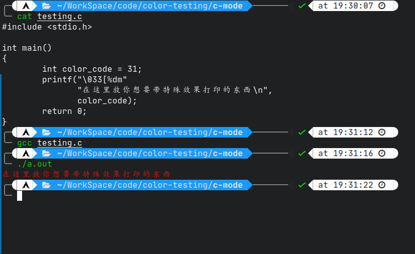
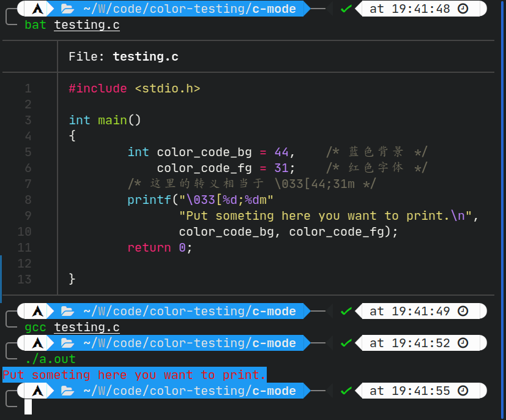
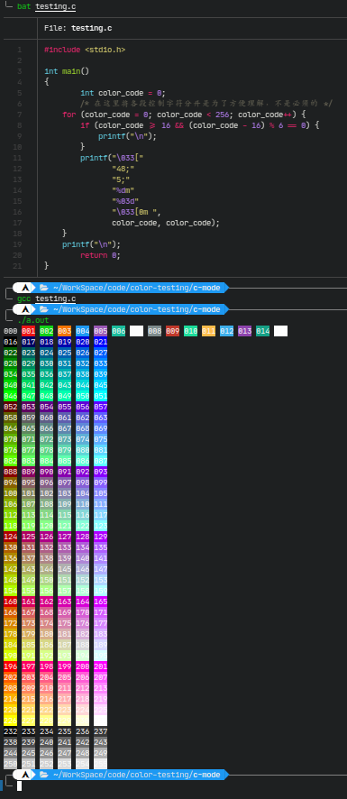

打印字符使用特殊效果
Table of Contents
1. 打印字符使用特殊效果
1.1. 简单介绍
特殊效果的支持源自ANSI标准，由于我不是很懂所以不多赘述。这里重点关注我们应该如何使用它。
先说结论：
要使用特殊效果，通常需要使用任意输出函数输出以 \033[数字选项+字符选项 为格式的字符串。
其中，字符选项相当于指定了其大概的类型，只可以单独使用，并作为一串控制字符串的结束。而数字选项则是细分了其具体功能，且可以复用，只需要使用分号将其隔开。
例子请续看下文。
1.2. m型效果
做出一些提醒，以上内容都需要一个关键的字符
m，所有的文字效果都是基于\033[XXm的格式，只是为了方便理解，在大部分内容都不作为重点讲述。
1.2.1. 颜色
- 使用普通颜色（非256色）
要打印出普通的颜色，只需要使用下面的程序：
#include <stdio.h> int main() { int color_code = 31; /* 这里使用变量不是必须的，只是为了更容易看懂，实际上需要打印出对应的数字即可 */ printf("\033[%dm" "在这里放你想要带特殊效果打印的东西\n", color_code); return 0; }
它运行后的输出结果是这样的：

Figure 1: 输出结果
下面是所有关于颜色控制的数字表格，左侧是字体颜色，右侧是背景颜色。
数字 字体颜色 数字 背景颜色 30 黑色 40 默认/无色 31 红色 41 红色 32 绿色 42 绿色 33 黄色/橙色 43 黄色/橙色 34 蓝色 44 蓝色 35 紫色 45 紫色 36 青色 46 青色 37 白色 47 白色 顺带一提，这些控制代码是“可堆叠的”，意思就是不通的颜色代码可以使用分号
;隔断开来，这样就不必打上好几个\033[...让代码变得难以阅读。这里再举一个例子做示范。#include <stdio.h> int main() { int color_code_bg = 44, /* 蓝色背景 */ color_code_fg = 31; /* 红色字体 */ /* 这里的转义相当于 \033[44;31m */ printf("\033[%d;%dm" "Put someting here you want to print.\n", color_code_bg, color_code_fg); return 0; }
运行效果如下：

Figure 2: 运行结果
- 使用真彩色（256色）
在这种情况下，我们可以打印出256种颜色，比普通颜色高级多了。不过我也还是不知道Vim和Emacs这些编辑器使用主题时是怎样打印任意颜色的。毕竟我取过色，发现我使用的主题有很多都不在256色的范围内，所以说挺令我困惑的。
废话少说，先上代码示范。
#include <stdio.h> int main() { int color_code = 0; /* 在这里将各段控制字符分开是为了方便理解，不是必须的 */ for (color_code = 0; color_code < 256; color_code++) { if (color_code >= 16 && (color_code - 16) % 6 == 0) { printf("\n"); } printf("\033[" "48;" "5;" "%dm" "%03d" "\033[0m ", color_code, color_code); } printf("\n"); return 0; }
运行效果如下：

Figure 3: 运行结果
注：如果觉得图片不够清晰可以访问这个地址查看终端输出
下面开始讲解。
要想使用256色的输出，你需要的是
48;5;%dm这样一串控制符。 其中的48;5;就是关键。在这里
48的意思实际上应该是告诉颜色的类型是背景颜色，如果想要设置字体的颜色，只需要将其替换成38即可。接下来的
5我就不清楚具体的作用了。我只提上一点：如果单独使用它，那么它所对应的效果实际上是 字体闪烁 。
1.2.2. 文字效果
如果你观察仔细，就应该会发现刚刚的代码里面有一些新的控制符，例如刚刚提到的 \033[5m; 也有 \033[0m 。现在，是时候列出一个效果列表了。
| 控制符 | 效果 |
|---|---|
| 0 | 清除所有文字效果 |
| 1 | 加粗文字 |
| 2 | 细化文字 |
| 3 | 斜体 |
| 4 | 下划线 |
| 5 | 闪烁 |
| 6 | 未知 |
| 7 | 颜色反转（字体和背景颜色互换） |
| 8 | 隐藏字体（或许可以尝试做一些彩蛋？） |
1.3. 其他类型
1.3.1. 光标移动
| 空字符 | 效果 |
|---|---|
| D | 左 |
| C | 右 |
| A | 上 |
| B | 下 |
这种情况下，数字参数用于指定步数
1.3.2. 光标显示
隐藏光标： \033[?25l
显示光标： \033[?25h
1.3.3. 光标位置
保存： \033[u
还原： \033[l